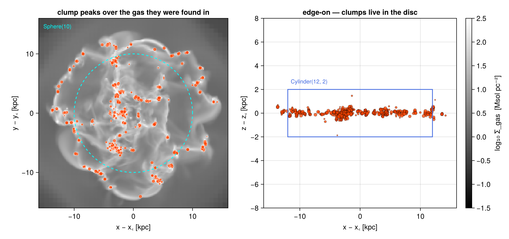
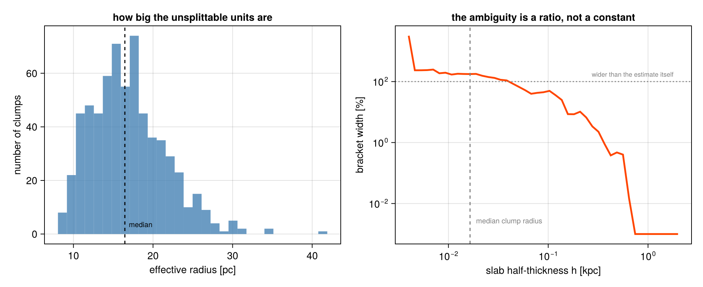
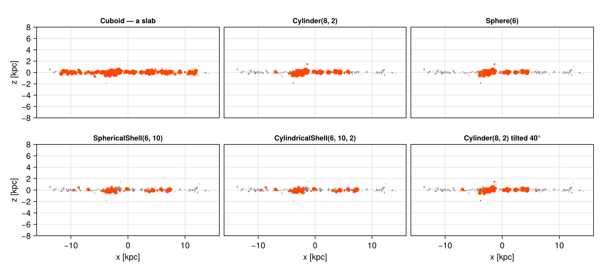
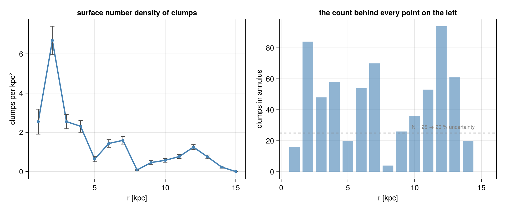

3. Clumps: Regions Applied to a Catalogue
This page is also an executable Jupyter notebook: open / download 03_clumps_Get_Subregions.ipynb. The notebooks run end-to-end and double as part of Mera's test suite.
A clump catalogue is not a grid and not a particle list. It is a table of objects, each row one clump, summarised by the position of its density peak and a handful of scalars. subregion applies to it the same way it applies to everything else, and the mechanics are the simplest on any of these pages: the peak is a point, the region is a predicate, a clump is in or out.
The interesting part is what that simplicity hides.
A clump is an extended thing. Its mass is spread over many cells, but the catalogue records only where its peak is, so when a region boundary cuts through a clump, the selection has no way to split it. The whole object is assigned by its peak, all of its mass or none of it. The boundary problem the hydro page solved with volume fractions does not disappear here; it moves up a level, from cells to objects, and gets harder, because the catalogue no longer knows where the mass is.
This page shows how to work with that honestly: the same regions, the same algebra, plus a two-line check that tells you whether the objects your boundary cuts through matter. In this galaxy, at the scales one normally works at, they do not, but that is a measurement, not an assumption, and §3 shows where the answer flips.
Reading convention. Longer code cells are cut in two by a banner line:
# ── figure code from here: panels, overlays, colorbars — no new Mera concepts ──Everything above the banner is the Mera part; everything below is Makie decoration.
On this page
- what a clump row is
- one sphere, and an exact selection
- the peak is a proxy: from a number to a bracket
- the geometry gallery
- composites and the
@regionblock - place and property: regions meet filters
- profiles, and why the counts are the limit
- reference: the classic symbol API
- practical guidance
1. What a Clump Row Is
The same galaxy as the other sub-region pages, now through the clump finder's eyes. The gas is loaded too, not for the selection, but as a backdrop and, in §3, as the thing the clumps are made of.
# Example-data root. Point this at your own simulation folder, or set the
# MERA_EXAMPLES environment variable; every path below is built from it.
MERA_EXAMPLES = get(ENV, "MERA_EXAMPLES", "/Volumes/FASTStorage/Simulations/Mera-Tests");
using Mera, CairoMakie
# Makie also exports geometric names (Sphere, Cylinder, ...), state explicitly
# that we mean Mera's region types:
import Mera: Sphere, Cuboid, Cylinder, SphericalShell, CylindricalShell
CairoMakie.activate!()
path = "$MERA_EXAMPLES/RAMSES/manu_sim_sf_L14"
info = getinfo(400, path, verbose=false)
clumps = getclumps(info, verbose=false)
gas = gethydro(info, :rho, lmax=10, smallr=1e-11, verbose=false, show_progress=false)
kpc = info.scale.kpc
println("clumps : ", length(clumps.data))
println("columns : ", keys(clumps.data[1]))
println("total clump mass: ", round(msum(clumps, :Msol), sigdigits=5), " Msol")
println(" gas mass : ", round(msum(gas, :Msol), sigdigits=5), " Msol (whole box)")
println("clump masses : ", round(minimum(getvar(clumps, :mass, :Msol)), sigdigits=3), " – ",
round(maximum(getvar(clumps, :mass, :Msol)), sigdigits=3), " Msol")*__ __ _______ ______ _______
| |_| | | _ | | _ |
| | ___| | || | |_| |
| | |___| |_||_| |
| | ___| __ | |
| ||_|| | |___| | | | _ |
|_| |_|_______|___| |_|__| |__|
Mera v1.8.0 | Julia 1.12.7 | 4 threads
clumps : 644
columns : (:index, :lev, :parent, :ncell, :peak_x, :peak_y, :peak_z, Symbol("rho-"), Symbol("rho+"), :rho_av, :mass_cl, :relevance)
total clump mass: 1.3743e10 Msol
gas mass : 3.0401e10 Msol (whole box)
clump masses : 312000.0 – 8.61e8 MsolTwelve columns, 644 rows. :peak_x, :peak_y, :peak_z are the position of the density maximum, and the only geometry in the table. :mass_cl is the clump's mass (getvar(..., :mass) reads it), :rho_av its mean density, :ncell how many cells it covers, :relevance the clump finder's significance measure, and :index/:parent/:lev place it in the finder's merger hierarchy.
Note what is not there: any description of the clump's shape or extent. That absence is the subject of §3.
# ─────────────────────────────────────────────────────────────────────
# FIGURE INFRASTRUCTURE for the whole page, skim freely on first read.
# The Mera-relevant lines are `gproj` (the gas backdrop) and `peaks`
# (clump peak positions in kpc relative to the box centre).
# ─────────────────────────────────────────────────────────────────────
const SDLIM = (-1.5, 2.5) # log10 Σ [Msol/pc²]
gproj(o; kwargs...) = projection(o, :sd, :Msol_pc2; direction=:z, center=[:bc],
pxsize=[0.2, :kpc], verbose=false, show_progress=false,
kwargs...)
function show_sd!(ax, p; flo=1e-2, decorate=false)
m = p.maps[:sd]
xs = range(p.cextent[1]*kpc, p.cextent[2]*kpc; length=size(m, 1))
ys = range(p.cextent[3]*kpc, p.cextent[4]*kpc; length=size(m, 2))
heatmap!(ax, xs, ys, log10.(max.(m, flo)); colormap=:bone, colorrange=SDLIM)
ax.aspect = DataAspect()
ax.backgroundcolor = :black
decorate || hidedecorations!(ax)
return ax
end
peaks(c) = (getvar(c, :x, :kpc, center=[:bc]),
getvar(c, :y, :kpc, center=[:bc]),
getvar(c, :z, :kpc, center=[:bc]))
# marker area ∝ clump mass, clipped so the smallest stay visible
msize(c) = clamp.(1.6 .* (getvar(c, :mass, :Msol) ./ 1e5).^(1/3), 1.5, 9.0)msize (generic function with 1 method)p_face = gproj(gas)
cx, cy, cz = peaks(clumps)
# ── figure code from here: panels, overlays, colorbars, no new Mera concepts ──
fig = Figure(size=(1000, 470))
ax1 = Axis(fig[1, 1], title="clump peaks over the gas they were found in",
xlabel="x − x꜀ [kpc]", ylabel="y − y꜀ [kpc]")
show_sd!(ax1, p_face; decorate=true)
scatter!(ax1, cx, cy; markersize=msize(clumps), color=(:orangered, 0.75),
strokewidth=0.3, strokecolor=:white)
arc!(ax1, Point2f(0, 0), 10., 0, 2π; color=:cyan, linewidth=1.5, linestyle=:dash)
text!(ax1, -15.2, 15.2; text="Sphere(10)", color=:cyan, fontsize=11,
align=(:left, :top))
limits!(ax1, -16, 16, -16, 16)
ax2 = Axis(fig[1, 2], title="edge-on — clumps live in the disc",
xlabel="x − x꜀ [kpc]", ylabel="z − z꜀ [kpc]")
scatter!(ax2, cx, cz; markersize=msize(clumps), color=(:orangered, 0.75),
strokewidth=0.3, strokecolor=:black)
lines!(ax2, [-12., 12., 12., -12., -12.], [-2., -2., 2., 2., -2.];
color=:royalblue, linewidth=1.5)
text!(ax2, -11.5, 2.4; text="Cylinder(12, 2)", color=:royalblue, fontsize=11)
limits!(ax2, -16, 16, -8, 8)
Colorbar(fig[1, 3]; colormap=:bone, colorrange=SDLIM, label="log₁₀ Σ_gas [Msol pc⁻²]")
fig
Marker area scales with clump mass. They trace the dense gas, they are confined to the disc, and, the point of the next two sections, they are objects, not samples: a few hundred of them stand in for the entire population of dense structures in this galaxy.
2. One Sphere, and an Exact Selection
Mechanically this is the particle case. subregion tests each peak against the region and keeps whole rows; there is no :fraction, no split, and a region together with its complement partitions the catalogue exactly.
sph = Sphere(10.) # center=[:bc], range_unit=:kpc by default
c_in = subregion(clumps, sph, verbose=false)
c_out = subregion(clumps, sph, inverse=true, verbose=false)
println("all clumps : ", rpad(length(clumps.data), 7), round(msum(clumps, :Msol), sigdigits=7), " Msol")
println("peak inside r<10 : ", rpad(length(c_in.data), 7), round(msum(c_in, :Msol), sigdigits=7))
println("peak outside r>10 : ", rpad(length(c_out.data), 7), round(msum(c_out, :Msol), sigdigits=7))
println()
println("count residual : ", length(c_in.data) + length(c_out.data) - length(clumps.data))
println("clump mass as a share of the gas inside r < 10 kpc : ",
round(100 * msum(c_in, :Msol) / msum(subregion(gas, sph, verbose=false), :Msol), digits=2), " %")all clumps : 644 1.374328e10 Msol
peak inside r<10 : 400 9.640827e9
peak outside r>10 : 244 4.102454e9
count residual : 0
clump mass as a share of the gas inside r < 10 kpc : 52.94 %The counts close exactly, as they must for a membership test.
The last line is more interesting than it looks. The clumps in this sphere hold 53 % of its gas mass, this finder's density threshold is low enough that the catalogue is not a sprinkling of rare peaks but half the inner galaxy's gas, gathered into 400 objects. That is worth knowing before quoting any clump statistic as "the dense gas".
It is still not a decomposition. The other 47 % is diffuse material that belongs to no clump, so summing clump masses gives a lower bound on the gas in a region, never an estimate of it, and no region operation changes that. Ratios of the two (this one, or its radial profile) are the meaningful statistic.
3. The Peak Is a Proxy: from a Number to a Bracket
Here is where a catalogue differs from a particle list.
A star particle is a point; putting it inside or outside a region is not an approximation. A clump is not a point. It has an extent, and the catalogue gives us enough to estimate it: mass and mean density imply a volume, and a volume implies an effective radius,
\[r_\mathrm{eff} = \left(\frac{3}{4\pi}\frac{M_\mathrm{cl}}{\rho_\mathrm{av}}\right)^{1/3}.\]
That is a crude sphere-equivalent radius, real clumps are filamentary, but it is enough to answer the question that matters: how many of these objects does a given boundary cut through?
m_code = getvar(clumps, :mass) # code units — only the ratio matters here
rho_av = getvar(clumps, :rho_av)
r_eff = (3 .* (m_code ./ rho_av) ./ (4π)).^(1/3) .* kpc # kpc
mass = getvar(clumps, :mass, :Msol)
d = sqrt.(cx.^2 .+ cy.^2 .+ cz.^2) # peak distance from the box centre, kpc
r_med = sort(r_eff)[cld(length(r_eff), 2)]
println("cells per clump : ", Int(minimum(getvar(clumps, :ncell))), " – ",
Int(maximum(getvar(clumps, :ncell))))
println("effective radii : ", round(minimum(r_eff)*1e3, digits=1), " – ",
round(maximum(r_eff)*1e3, digits=1), " pc (median ",
round(r_med*1e3, digits=1), " pc)")
# the Sphere(10) of §2: how many clumps does that boundary actually cut?
R = 10.0
straddling = count(abs.(d .- R) .< r_eff)
peak = sum(mass[d .< R])
upper = sum(mass[d .- r_eff .< R]) # every clump that overlaps at all
lower = sum(mass[d .+ r_eff .< R]) # only clumps entirely inside
println()
println("clumps cut by the r = 10 kpc surface : ", straddling, " of ", length(d))
println("mass inside — lower / peak / upper : ", round(lower, sigdigits=6), " / ",
round(peak, sigdigits=6), " / ", round(upper, sigdigits=6), " Msol")
println("bracket width : ",
round(100*(upper - lower)/peak, digits=4), " %")cells per clump : 87 – 12250
effective radii : 8.1 – 41.9 pc (median 16.5 pc)
clumps cut by the r = 10 kpc surface : 1 of 644
mass inside — lower / peak / upper : 9.59732e9 / 9.64083e9 / 9.64083e9 Msol
bracket width : 0.4512 %For a 10 kpc sphere the answer is: one clump out of 644, and half a percent. The clumps in this galaxy are tens of parsecs across, the region is ten kiloparsecs, and its boundary passes almost entirely through space between objects three orders of magnitude smaller than itself. The peak proxy is exact for every practical purpose here, and this page is not an argument against using it.
Note where even that half a percent comes from: a single object. With 644 rows in the catalogue and a mass function spanning three decades, one massive clump on the boundary is worth more than the counting noise of a whole annulus. Small catalogues are lumpy.
But the ambiguity is not a property of the catalogue alone, it is the ratio of object size to region size. Shrink the region and it grows. The cleanest way to see that is to keep one shape and sweep its scale: a midplane slab, from a couple of kpc thick down to the size of a single clump.
zc = cz # peak height above the midplane, kpc
function slab_bracket(h) # |z| < h, three boundary conventions
pk = sum(mass[abs.(zc) .< h])
up = sum(mass[abs.(zc) .- r_eff .< h])
lo = sum(mass[abs.(zc) .+ r_eff .< h])
return pk > 0 ? 100 * (up - lo) / pk : NaN
end
hs = 10 .^ range(log10(0.004), log10(2.0); length=45)
br = slab_bracket.(hs)
for h in (2.0, 0.5, 0.1, 0.02, 0.005)
println("slab |z| < ", rpad(h, 7), " kpc : bracket = ",
round(slab_bracket(h), digits=2), " %")
end
# ── figure code from here: panels, overlays, colorbars, no new Mera concepts ──
fig = Figure(size=(980, 400))
ax1 = Axis(fig[1, 1], xlabel="effective radius [pc]", ylabel="number of clumps",
title="how big the unsplittable units are")
hist!(ax1, r_eff .* 1e3; bins=30, color=(:steelblue, 0.8))
vlines!(ax1, [r_med * 1e3]; color=:black, linestyle=:dash)
text!(ax1, r_med*1e3, 2; text=" median", align=(:left, :bottom), fontsize=10)
ax2 = Axis(fig[1, 2], xlabel="slab half-thickness h [kpc]", ylabel="bracket width [%]",
xscale=log10, yscale=log10, title="the ambiguity is a ratio, not a constant")
lines!(ax2, hs, max.(br, 1e-3); color=:orangered, linewidth=2.5)
hlines!(ax2, [100.]; color=:grey, linestyle=:dot)
text!(ax2, 1.8, 130; text="wider than the estimate itself", color=:grey, fontsize=9,
align=(:right, :bottom))
vlines!(ax2, [r_med]; color=:grey, linestyle=:dash)
text!(ax2, r_med*1.15, 2e-3; text="median clump radius", color=:grey, fontsize=10,
align=(:left, :bottom))
figslab |z| < 2.0 kpc : bracket = 0.0 %
slab |z| < 0.5 kpc : bracket = 0.45 %
slab |z| < 0.1 kpc : bracket = 51.39 %
slab |z| < 0.02 kpc : bracket = 153.13 %
slab |z| < 0.005 kpc : bracket = 234.42 %
At the slab thicknesses this galaxy is normally sliced with the bracket is negligible: 0 % at |z| < 2 kpc, no clump reaches that high, and 0.45 % at |z| < 0.5 kpc. Follow the curve leftward and it climbs fast: 51 % at 100 pc, and past 100 % below about 20 pc, where the bracket is wider than the estimate it brackets. By the time the slab is as thin as a clump is wide, "the clump mass in this slab" has stopped being a well-defined quantity at all.
Two things are worth taking from that.
First, the check is cheap. Two extra sums against d ± r_eff tell you whether the region you are about to use is in the safe regime, and the answer is not always obvious, a thin region can be geometrically large and still be dominated by boundary effects.
Second, this ambiguity is a different kind of thing from the hydro page's whole-cell excess. There, refinement shrinks it and fraction splitting removes it outright. Here nothing in the catalogue can remove it, because the information needed to split a clump, where inside it the mass sits, was discarded when the finder wrote one row per object. The only ways out are to keep the regions large compared with the clumps, or to go back to the gas and do the measurement on cells.
A practical corollary: do not place a region boundary so that it deliberately runs through the structures you are studying. If one has to fall there, quote the bracket.
4. The Geometry Gallery
Every region value type applies to a clump catalogue, with the usual keywords: center, range_unit, inverse=true, and axis to tilt a cylinder. The grid-boundary keywords, split, nsub, refine, refine_to, have nothing to act on and are absent.
gallery = [
("Cuboid — a slab", Cuboid(xrange=[-12, 12], yrange=[-12, 12], zrange=[-1, 1])),
("Cylinder(8, 2)", Cylinder(8., 2.)),
("Sphere(6)", Sphere(6.)),
("SphericalShell(6, 10)", SphericalShell(6., 10.)),
("CylindricalShell(6, 10, 2)", CylindricalShell(6., 10., 2.)),
("Cylinder(8, 2) tilted 40°", Cylinder(8., 2.; axis=[0, sind(40), cosd(40)])),
]
for (name, reg) in gallery
s = subregion(clumps, reg, verbose=false)
println(rpad(name, 30), rpad(length(s.data), 7),
round(100*msum(s, :Msol)/msum(clumps, :Msol), digits=1), " % of the clump mass")
end
# ── figure code from here: panels, overlays, colorbars, no new Mera concepts ──
fig = Figure(size=(1020, 470))
for (k, (name, reg)) in enumerate(gallery)
s = subregion(clumps, reg, verbose=false)
sx, sy, sz = peaks(s)
row, col = fld(k-1, 3)+1, mod(k-1, 3)+1
ax = Axis(fig[row, col], title=name, titlesize=12,
xlabel=(row == 2 ? "x [kpc]" : ""), ylabel=(col == 1 ? "z [kpc]" : ""))
scatter!(ax, cx, cz; markersize=3, color=(:grey, 0.45))
scatter!(ax, sx, sz; markersize=msize(s), color=(:orangered, 0.8))
limits!(ax, -16, 16, -8, 8); ax.aspect = DataAspect()
row == 2 || hidexdecorations!(ax; grid=false)
col == 1 || hideydecorations!(ax; grid=false)
end
rowgap!(fig.layout, 4); colgap!(fig.layout, 8)
figCuboid — a slab 603 95.4 % of the clump mass
Cylinder(8, 2) 352 57.9 % of the clump mass
Sphere(6) 249 37.8 % of the clump mass
SphericalShell(6, 10) 151 32.3 % of the clump mass
CylindricalShell(6, 10, 2) 151 32.3 % of the clump mass
Cylinder(8, 2) tilted 40° 196 28.5 % of the clump mass
Grey is the whole catalogue, orange what the region kept, seen edge-on. With a few hundred objects the panels double as a sanity check you cannot get from a grid: you can see every selected item, and a region that has gone wrong is obvious immediately.
The two shells are worth a second look, they select exactly the same clumps. A spherical shell and a cylindrical shell of the same radii differ only off the midplane, and this population is thin enough that there is nothing out there to differ about. On the gas, the same two regions would enclose very different volumes.
5. Composites and the @region Block
Boolean composition works as everywhere else, ∩ ∪ \ !, or intersect / union / setdiff, and @region keeps a composite readable by hoisting the shared keywords out of the constructors.
(∩ is typed \cap+TAB, ∪ is \cup+TAB; the named functions are always available if you prefer.)
outer_disc = @region unit=:kpc center=[:bc] begin
disc = Cylinder(12, 2)
core = Cylinder(4, 2)
disc \ core # the star-forming annulus, nucleus excluded
end
c_ring = subregion(clumps, outer_disc, verbose=false)
c_disc = subregion(clumps, Cylinder(12., 2.), verbose=false)
c_core = subregion(clumps, Cylinder(4., 2.), verbose=false)
println("disc slab : ", rpad(length(c_disc.data), 7), round(msum(c_disc, :Msol), sigdigits=6), " Msol")
println(" nucleus r < 4 : ", rpad(length(c_core.data), 7), round(msum(c_core, :Msol), sigdigits=6))
println(" annulus 4 < r < 12 : ", rpad(length(c_ring.data), 7), round(msum(c_ring, :Msol), sigdigits=6))
println()
println("counts partition : ", length(c_core.data) + length(c_ring.data) == length(c_disc.data))
println("masses add : ", msum(c_core, :Msol) + msum(c_ring, :Msol) ≈ msum(c_disc, :Msol))disc slab : 519 1.14995e10 Msol
nucleus r < 4 : 169 3.16131e9
annulus 4 < r < 12 : 350 8.33822e9
counts partition : true
masses add : trueBoth checks pass exactly, and for the same reason as on the particle page: each clump is assigned to one side or the other, so a partition of the region is a partition of the catalogue. This is the cheapest possible test that a composite means what you think, and it costs one line.
6. Place and Property: Regions Meet Filters
A clump table is unusually rich in per-object properties, and filterdata selects on any of them by value, mass, mean density, cell count, or the clump finder's own :relevance. Geometric and property cuts compose in either order.
:relevance is the clump finder's own significance measure, a peak-to-saddle density contrast, large when a clump is clearly separated from its neighbours and close to 1 when it is barely a distinct object. This run kept nothing below 2, so filtering on it means asking for clumps more clearly separated than the finder's own floor.
AbovePercentile is worth knowing about here: it thresholds at a percentile of the data rather than at an absolute value, which is the right tool when you want "the most massive tenth" of a catalogue whose mass scale you have not looked at yet.
disc = subregion(clumps, Cylinder(12., 2.), verbose=false)
solid = filterdata(disc, Above(:relevance, 3.0), verbose=false) # well-separated peaks
massive = filterdata(disc, AbovePercentile(:mass, 90), verbose=false) # top 10 % by mass
both = filterdata(disc, Above(:relevance, 3.0),
AbovePercentile(:mass, 90), verbose=false)
println("disc slab : ", rpad(length(disc.data), 7),
round(msum(disc, :Msol), sigdigits=6), " Msol")
println(" relevance > 3 : ", rpad(length(solid.data), 7),
round(msum(solid, :Msol), sigdigits=6))
println(" most massive 10 % : ", rpad(length(massive.data), 7),
round(msum(massive, :Msol), sigdigits=6))
println(" both conditions : ", rpad(length(both.data), 7),
round(msum(both, :Msol), sigdigits=6))
println()
# order does not matter
alt = subregion(filterdata(clumps, Above(:relevance, 3.0), verbose=false),
Cylinder(12., 2.), verbose=false)
println("region∘filter == filter∘region : ", length(alt.data) == length(solid.data))disc slab : 519 1.14995e10 Msol
relevance > 3 : 439 1.08897e10
most massive 10 % : 52 6.81601e9
both conditions : 50 6.69392e9
region∘filter == filter∘region : trueMultiple conditions passed to one filterdata call are ANDed; &, |, and ! compose them explicitly, and the Masking & Filtering page covers the full vocabulary. The important structural point is the last line: geometry and property are independent, so the order you apply them in cannot change the answer.
7. Profiles, and Why the Counts Are the Limit
A stack of CylindricalShell annuli turns the catalogue into a radial profile. With a few hundred objects in total, though, the honest constraint is not the geometry, it is how many clumps land in each ring.
r_ann = collect(1.0:1.0:15.0)
n_cl, m_cl, area = Int[], Float64[], Float64[]
for r in r_ann
a = subregion(clumps, CylindricalShell(r-0.5, r+0.5, 2.), verbose=false)
push!(n_cl, length(a.data))
push!(m_cl, length(a.data) == 0 ? 0.0 : msum(a, :Msol))
push!(area, π*((r+0.5)^2 - (r-0.5)^2)) # kpc²
end
println(rpad("annulus [kpc]", 16), rpad("N", 6), rpad("M [Msol]", 12), "1/√N")
println("-"^44)
for (r, n, m) in zip(r_ann, n_cl, m_cl)
println(rpad(string(r-0.5, " – ", r+0.5), 16), rpad(n, 6),
rpad(round(m, sigdigits=4), 12),
n == 0 ? "—" : string(round(100/sqrt(n), digits=0), " %"))
end
# ── figure code from here: panels, overlays, colorbars, no new Mera concepts ──
fig = Figure(size=(960, 400))
ax1 = Axis(fig[1, 1], xlabel="r [kpc]", ylabel="clumps per kpc²",
title="surface number density of clumps")
lines!(ax1, r_ann, n_cl ./ area; color=:steelblue, linewidth=2.5)
errorbars!(ax1, r_ann, n_cl ./ area, sqrt.(max.(n_cl, 1)) ./ area;
whiskerwidth=8, color=:grey30)
scatter!(ax1, r_ann, n_cl ./ area; color=:steelblue, markersize=8)
ax2 = Axis(fig[1, 2], xlabel="r [kpc]", ylabel="clumps in annulus",
title="the count behind every point on the left")
barplot!(ax2, r_ann, n_cl; color=(:steelblue, 0.6))
hlines!(ax2, [25.]; color=:grey, linestyle=:dash)
text!(ax2, 14.5, 27; text="N = 25 → 20 % uncertainty", color=:grey, fontsize=10,
align=(:right, :bottom))
figannulus [kpc] N M [Msol] 1/√N
--------------------------------------------
0.5 – 1.5 16 1.907e8 25.0 %
1.5 – 2.5 84 2.176e9 11.0 %
2.5 – 3.5 48 6.661e8 14.0 %
3.5 – 4.5 58 1.257e9 13.0 %
4.5 – 5.5 20 4.817e8 22.0 %
5.5 – 6.5 54 1.288e9 14.0 %
6.5 – 7.5 70 1.888e9 12.0 %
7.5 – 8.5 4 1.685e7 50.0 %
8.5 – 9.5 26 1.355e9 20.0 %
9.5 – 10.5 36 4.822e8 17.0 %
10.5 – 11.5 53 8.519e8 14.0 %
11.5 – 12.5 94 1.878e9 10.0 %
12.5 – 13.5 61 9.12e8 13.0 %
13.5 – 14.5 20 3.004e8 22.0 %
14.5 – 15.5 0 0.0 —
The left panel looks like a measured profile. The right panel is what it is made of: a dozen or two objects per ring, sometimes fewer. The error bars are $\sqrt{N}$, and outside the star-forming disc they are the entire story.
This is the same lesson as the particle page's §3, arriving sooner. A clump catalogue is a small sample by construction, the finder returns hundreds of objects where the grid has millions of cells, so it reaches the counting limit at radii where a particle or cell profile is still perfectly smooth. Bin wide, quote $N$, and resist reading structure into rings holding five objects.
8. Reference: the Classic Symbol API
The symbol interface works on clump data unchanged, testing the same peak positions.
| Value type | Classic call |
|---|---|
Cuboid(xrange=…, yrange=…, zrange=…) | subregion(clumps, :cuboid; xrange=…, …) |
Sphere(R) | subregion(clumps, :sphere; radius=R) |
Cylinder(R, H) | subregion(clumps, :cylinder; radius=R, height=H) (z-axis only) |
SphericalShell(rin, rout) | shellregion(clumps, :sphere; radius=[rin, rout]) |
CylindricalShell(rin, rout, H) | shellregion(clumps, :cylinder; radius=[rin, rout], height=H) |
Shared keywords: center, range_unit, inverse=true. As on the particle side, cell and split have no meaning for point-like rows, so the classic and value-type selections agree exactly.
getpositions(clumps, :kpc, center=[:boxcenter]) returns the three peak coordinate arrays in one call, and getextent(clumps, :kpc, center=[:boxcenter]) the coordinate ranges of the loaded object, for a catalogue read from the whole box, that is the box itself. Both are convenience accessors, handy for setting plot limits.
classic = subregion(clumps, :sphere; radius=10., center=[:bc], range_unit=:kpc, verbose=false)
value_t = subregion(clumps, Sphere(10.), verbose=false)
println("classic :sphere : ", rpad(length(classic.data), 7), round(msum(classic, :Msol), sigdigits=8))
println("value-type Sphere : ", rpad(length(value_t.data), 7), round(msum(value_t, :Msol), sigdigits=8))
println("identical : ", length(classic.data) == length(value_t.data) &&
msum(classic, :Msol) == msum(value_t, :Msol))
rx, ry, rz = getextent(clumps, :kpc, center=[:boxcenter])
println()
println("catalogue extent : x ", round.(rx, digits=2), " y ", round.(ry, digits=2),
" z ", round.(rz, digits=2), " kpc")classic :sphere : 400 9.6408271e9
value-type Sphere : 400 9.6408271e9
identical : true
catalogue extent : x (-24.0, 24.0) y (-24.0, 24.0) z (-24.0, 24.0) kpc9. Practical Guidance
The selection is exact; the interpretation is not. subregion on a catalogue is a clean membership test on peak positions. "The clump mass inside this region" is a different claim, and it carries the bracket of §3 whenever the boundary passes through clump-sized structures.
Keep boundaries away from the objects. Regions much larger than the typical clump make the bracket negligible. Regions comparable to a clump make it dominant, and at that point the question probably belongs on the gas, not on the catalogue.
Clumps are peaks, not a decomposition. Their masses do not sum to the gas mass of a region (§2). A ratio of the two is a meaningful statistic; treating the catalogue as a partition of the gas is not.
Counts run out fast. Hundreds of rows, not millions. Every profile point needs its $N$ quoted, and $\sqrt{N}$ is usually the largest error in the figure (§7).
Filter on the finder's own quality measures. :relevance and :ncell exist to let you discard marginal detections; applying a region to an unfiltered catalogue silently includes them (§6).
Summary
- A clump catalogue is a table of objects located by their density peaks;
subregionis a membership test on those peaks, with no fractions and nosplit, partitions close exactly (§2, §5). - Because a clump is extended but recorded as a point, a boundary through clumps turns a mass into a bracket. Mass and mean density give an effective radius (tens of pc here) that makes the bracket measurable: at kpc-scale regions it is a fraction of a percent, at clump-scale regions it is everything, and nothing in the catalogue can narrow it (§3).
- All region value types, boolean composition,
@region, tilted axes andinverse=truebehave as on every other page (§4, §5), and property filters compose with regions in either order (§6). - With a few hundred objects, counting noise arrives early: profiles are limited by $N$ per bin, not by the geometry (§7).
Continue with:
- Hydro sub-regions, where the boundary ambiguity can be removed, by splitting cells on volume fraction.
- Particle sub-regions, genuinely point-like data, and what limits it instead.
- Gravity sub-regions, the same regions on the force field.
- Masking & Filtering, the value-space counterpart of these selections.